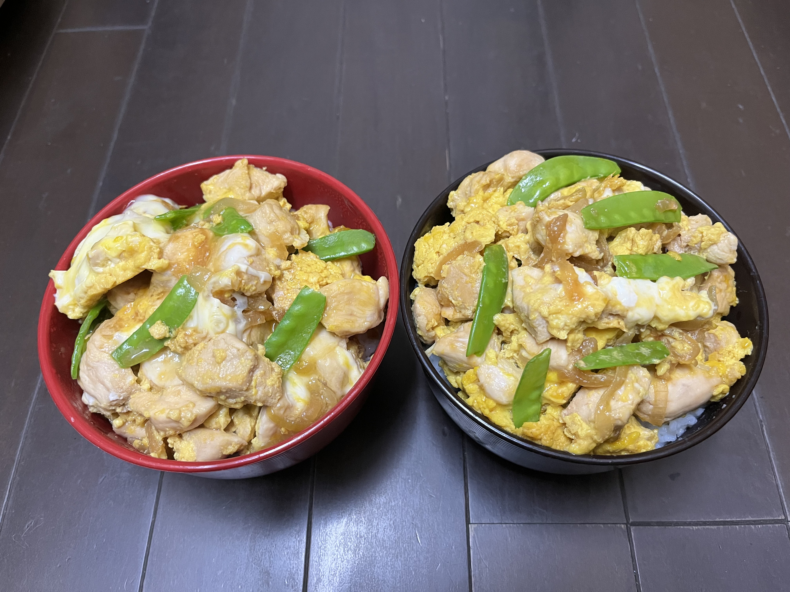

ホームへ
レシピID：018
親子丼

材料
・玉ねぎ 1個
・ささみ 6〜8本
・たまご 4個
・さやえんどう 適量
作り方
1.フライパンに煮汁(別途記載)と薄切りにした玉ねぎを入れフタをして煮る(2〜3分)
2.玉ねぎがしんなりしたらひと口大に切ったささみを入れフタをして煮る(ささみに火が通るまで)
3.火が通ったらフタをあけ溶き卵を回し入れ半熟になったらサヤエンドウを加える
4.そろそろいいかなと思ったら火を止めごはんにかける